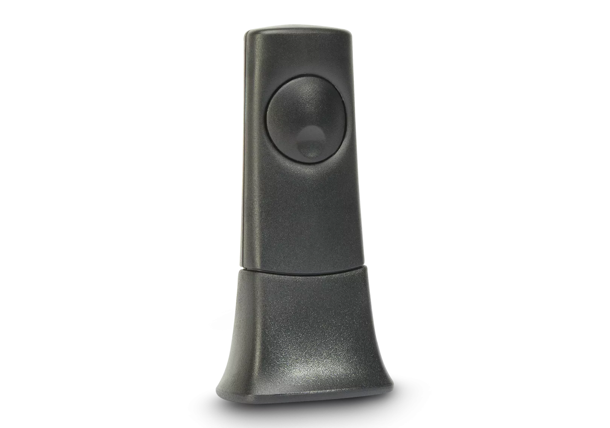
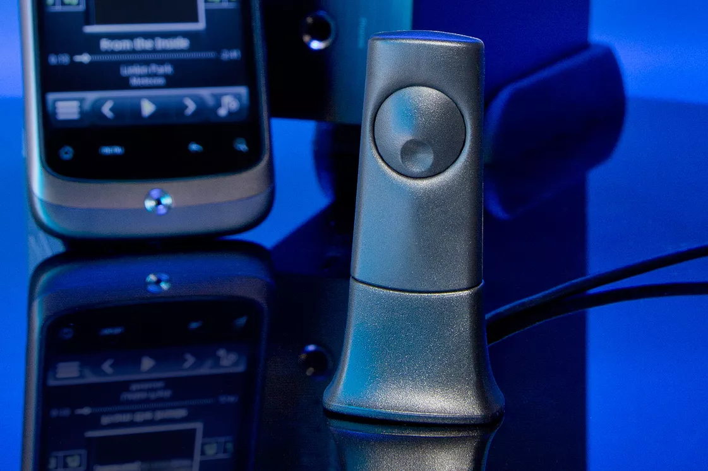

Bluetooth® オーディオレシーバー
BT100
お手持ちのHi-Fiシステムに高品質なBluetooth®ストリーミングを追加。aptX HD対応で、ワイヤレスでもハイレゾに迫るサウンドを実現します。
Bluetooth® 5.0
aptX HD
光デジタル出力
コンパクト設計

ワイヤレスで高音質を
お使いのスマートフォンやタブレットがaptXオーディオ強化コーデックに対応している場合、BT100はそれを最大限に活用します。MacBookやAppleデスクトップを含むモバイルデバイスに搭載が広がるaptXは、標準的なBluetoothを大幅に上回る音質でワイヤレス再生を実現。豊かなダイナミックレンジ、深みのある低音、クリスタルクリアな高域をお届けします。
aptXコーデックの優位性
標準的なBluetoothコーデック（SBC）は、高域のクリアさの低下や弦楽器の濁りなど、音楽愛好家にとって弱点が明らかです。対照的に、aptXコーデックは一貫して高品質な再生を保証する固定性能基準を持っています。ほぼCD品質の再生が可能で、お気に入りの音楽から豊かなダイナミクスとディテールを引き出します。
幅広い互換性
BT100は、851D、851N、CXA60、CXA80、CXN V1、CXN V2、CXN V2 Series 2、CXR120、CXR200、DacMagic Plus、Minx Xi、NP30、Stream Magic 6 V2に対応しています。
技術仕様
BluetoothBluetooth 5.0
対応コーデックaptX HD、aptX、SBC
接続方式専用コネクター
電源接続先機器より供給
対応機器851D、851N、CXA60、CXA80、CXN V1/V2、CXR120、CXR200、DacMagic Plus、Minx Xi、Stream Magic 6 V2
カラーブラック